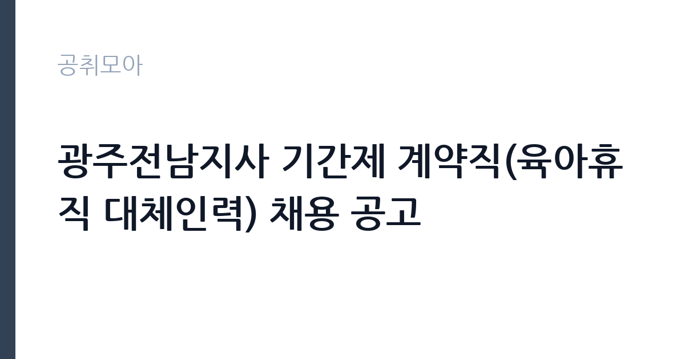

[공공기관] 광주전남지사 기간제 계약직(육아휴직 대체인력) 채용 공고
(주)한국가스기술공사 · 전남광주 · 마감 2026-11-02 (D-15) · 출처 잡알리오

한눈에 보는 모집 조건
| 기관 | (주)한국가스기술공사 |
|---|---|
| 공고명 | 광주전남지사 기간제 계약직(육아휴직 대체인력) 채용 공고 |
| 고용형태 | 기간제 |
| 근무지 | 전남광주 |
| 게시일 | 2026-10-19 |
| 마감일 | 2026-11-02 (D-15) |
지원자격, 이렇게 읽으세요
- 공공기관 채용공시
- 세부 조건은 원문 공고문 확인
자격 요건은 의외로 단순합니다. 운전면허 2종 보통 이상을 소지해야 하고, 공고일 기준 미성년자가 아니어야 합니다. 성별과 연령, 학력, 전공 제한은 없습니다. 대신 결격 요건이 여러 겹입니다. 공사의 인사규정에 따른 채용 결격·제한 사유가 없어야 하고, 비위면직자 등 취업제한 대상자는 지원할 수 없습니다. 병역법 제76조에 따른 병역의무 불이행 사실이 없어야 하며, 임용일 전까지 전역이 가능한 사람은 포함됩니다. 임용일부터 근무가 가능해야 한다는 조건도 확인해야 합니다.
이 공고의 포인트
이 공고의 성격은 실무 지원에 가깝습니다. 가스기술공사는 천연가스 공급 설비의 정비와 안전 점검을 담당하는 공공기관으로, 지사 단위에서 현장 업무를 지원합니다. 운전면허를 요건으로 두는 것은 현장 이동이 잦다는 뜻입니다. 기간제 계약직이지만 공공기관 지사에서 가스 설비 관련 행정과 현장 지원을 경험할 수 있어, 이후 공공기관 지원 시 경력으로 쓸 수 있습니다. 광주·전남 거주자에게는 통근 부담이 적은 자리입니다.
전형은 어떻게 진행되나
전형은 서류전형과 면접전형으로 진행되는 것이 일반적이며, 최종 단계에서 신체검사와 결격사유 확인이 이어집니다. 서류에서는 자격 요건과 경력을 확인하고, 면접에서는 현장 업무 이해도와 조직 적응력을 봅니다. 접수는 공사 채용 홈페이지에서 온라인으로 진행되고, 마감은 2026년 11월 2일입니다. 제출서류에는 지원서와 자기소개서, 개인정보 동의서, 자격증 사본이 포함되며, 병역 관련 서류는 해당자에 한해 요구됩니다. 서류 누락은 감점이나 접수 반려로 이어질 수 있습니다.
원문에서 확인한 전형 방식
○ 운전면허 2종 보통 이상 소지자 ○ 성별, 연령, 학력, 전공 제한 없음(공고일 기준 미성년자 제외) ○ 우리공사 「인사규정」등에 의한 채용 결격 및 제한 사유가 없는 자 ○ 비위면직자 등 취업제한 대상자 지원불가 ○ 병역법 제76조(병역의무 불이행자에 대한 제재)에서 정한 병역 의무 불이행 사실이 없으며 병역을 필하였거나 또한 면제받은 자 ※ 임용일 전까지 전역 가능한 자 포함 ○ (임용일자)부터 근무가능한자
이런 분께 추천해요
- 광주·전남 지역에서 공공기관 경력을 시작하려는 지원자
- 현장 지원과 행정 업무를 함께 수행할 수 있는 실무자
- 운전면허를 갖추고 단기 계약 근무를 감수할 수 있는 분
지원 전 체크리스트
- 운전면허 2종 보통 이상을 소지했는가
- 비위면직자 등 취업제한 대상에 해당하지 않는가
- 병역 의무를 마쳤거나 면제되었는가
- 임용일부터 근무가 가능한가
모집 일정과 제출 타이밍
마감은 2026년 11월 2일입니다. 서류전형 결과와 면접 일정은 개별 통보되고, 최종합격 후 임용일은 휴직자의 휴직 기간에 맞춰 정해집니다. 육아휴직 대체인력이므로 계약 기간은 휴직 기간과 연동되고, 복직 시 계약이 종료됩니다. 마감일이 월요일이므로 주말 전에 서류를 준비해 두는 편이 안전합니다. 채용 일정은 공사 사정에 따라 조정될 수 있습니다.
직무 이해하기: 공공기관
지사 기간제 계약직은 현장 업무와 행정 업무를 함께 맡습니다. 가스 설비 정비와 안전 점검에 필요한 서류를 준비하고, 현장 일정을 조율합니다. 자재와 장비의 입출고를 관리하고, 점검 결과를 기록합니다. 지사 운영에 필요한 총무와 회계 지원 업무가 더해지기도 합니다. 운전면허를 요건으로 두는 만큼 현장 방문과 자재 운송 지원이 업무에 포함됩니다. 정확한 업무 범위는 배치 부서에 따라 달라지므로 면접에서 확인하는 것이 좋습니다.
자기소개서 작성 팁
자기소개서는 두 가지를 보여주면 충분합니다. 첫째, 현장 업무를 감당할 수 있는 실행력입니다. 운전과 현장 방문이 포함된 업무를 수행한 경험을 구체적으로 쓰세요. 둘째, 서류와 기록을 정확히 다루는 능력입니다. 안전 점검 기록이나 자재 관리 경험이 있다면 강한 소재입니다. 지원동기는 공공기관에서 안전과 관련된 일을 한다는 점에 초점을 맞추면 좋습니다. 계약직이라는 조건을 이해하고 장기적으로 역량을 쌓겠다는 태도를 담담하게 밝히세요.
면접 준비 포인트
면접에서는 현장 업무에 대한 이해와 안전 의식을 확인합니다. 가스 설비의 위험성과 안전 수칙을 아는지, 작업 전 점검 항목을 설명할 수 있는지가 질문으로 나올 수 있습니다. 돌발 상황에서 보고 체계를 어떻게 따를지도 준비하세요. 계약 기간과 대체인력이라는 신분을 정확히 이해하고 있는지도 확인 대상입니다. 답변은 실제 경험을 순서대로 설명하는 방식이 가장 안전합니다.
급여·근무조건 읽는 법
보수는 공사의 기간제 계약직 보수 기준에 따라 정해지며, 정확한 금액은 원문 공고문의 보수 항목에서 확인해야 합니다. 참고로 한국가스기술공사가 2026년에 낸 서울지사 기간제 계약직 공고에서는 월 364만원 수준의 보수가 표시된 사례가 있었습니다. 이는 다른 지사와 직무의 예시이므로 이번 광주전남지사 공고 금액과 같다고 볼 수 없습니다. 육아휴직 대체인력은 기간제법상 정규직 전환 예외 대상이며, 4대보험과 퇴직급여는 관련 법령에 따라 적용됩니다. 근무 시간과 수당 체계는 채용 담당 부서에 확인하는 편이 정확합니다.
자주 묻는 질문
- 학력 제한이 정말 없나요
공고상 성별, 연령, 학력, 전공 제한을 두지 않는다고 명시되어 있습니다. 다만 공고일 기준 미성년자는 제외됩니다. - 정규직으로 전환되나요
아니요. 육아휴직자 대체를 위한 기간제 계약직으로, 정규직 전환을 전제로 하지 않습니다. - 운전면허가 없으면 지원할 수 없나요
이 공고는 운전면허 2종 보통 이상을 응시 요건으로 제시하고 있습니다. 자세한 기준은 원문 공고문을 확인하세요.
함께 보면 좋은 공고
[공공기관] '2026 장애인선수 현장밀착형 스포츠과학지원사업' 분석연구원(가급) 채용 공고 — 마감 2026-11-02[공공기관] 한국토지주택공사 서울지역본부 기간제근로자(매입행정역, 매입기술역, 공사원가검토역, 매입변호사, 매입감정평가사) 채용공고 — 마감 2026-11-02[공공기관] (보훈 및 장애인 제한경쟁) 육아휴직자 대체 시간선택제 일자리 채용 — 마감 2026-11-02출처: 잡알리오 공개정보를 바탕으로 공취모아가 정리한 안내글입니다. 모집 조건·일정은 변경될 수 있으니 지원 전 반드시 원문 공고문을 확인하세요. 본 글은 정보 제공용이며 합격을 보장하지 않습니다.